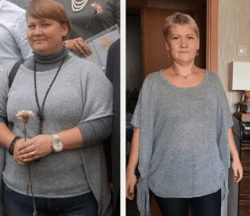
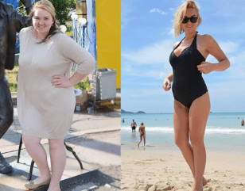
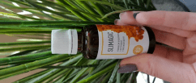

Osobné veľký úspech
Uh ... kde začať ...
Začnime, predovšetkým ďakujem za podporu, Pochvaly a láskavé slová)) Naozaj pekné ... (samozrejme som si vyslúžila chválu)😂
A ti, kteří se ke mně právě připojili, jmenuji se Maria a tohle je můj blog o tom, jak som schudla.
Začnime) Celý proces chudnutia) Celý rok!
Od 120 kg do 75 kg to rozhodne nie je limit) Plánujem ďalších mínus 15 kg)
Kto sa zaujímal - rast 177, 33 rokov, telefónne číslo +420775 .. (robím srandu)
Začiatok príbehu: som bola veľmi vysoká a moja matka ma zaviedla do basketbalovej sekcie, všetko pre mňa vyšlo a dokonca som myslela na kariéru, ale došlo k tragédii a môj obľúbený tréner zomrel. Šokovalo ma to a veľmi ma rozrušilo, už som nechcela hrať a vidieť loptu. A začala som veľa jesť, extrémne rýchlo som pribrala .
Nevrátila som sa do basketbalu. V škole som nemala priateľov, a bol som neustále škádlení kvôli růstuа, bola som vyššia ako všetky dievčatá, chlapci so mnou ani nehovorili ... Je mi 13 rokov a moja váha je už 80 kg, Ale v tej chvíli ma to nevadilo. Chodila som do školy a keď sa vrátila domov len jedla, jedla .. Rodičia sa mi pokúsili pomôcť, ale nič.
Uplynulo 5 rokov a ja tu sedím
ako krava vážiaci 110 kg a plačem, že ma nikto nemiluje) a nemám priateľov a koníčky ... Počula som za sebou smiech .. "Tučná krava" ... Zvykla som si na to ...

Uplynulo ďalších 10 rokov, vyštudovala som vysokú školu, našla som dobrú prácu ... všetko sa zdá byť v poriadku ... ale mala som SEN ... Chcela som stretnúť muža, ktorý ma bude milovať
a ja sa pre neho stane lepšie, krajšie ..
Bol to môj sen na 28 rokov))))
Ale z nejakého dôvodu som sa s takým nestretla, prečo??) ale stretla som priateľku, ktorá bola potrebná, tvrdá a pravdivá, ale zároveň pripravená podporovať.
Veľmi tvrdo mi povedala, že ak chcem manžela a deti
musím ísť a pracovať na sebe
!!!! pretože:
- to je moje zdravie!
- tohle je můj život!
- Hanbíš sa behať na štadióne? - A chceš byť
tučná krava?
- bež cvičiť!
Viete, rozhodla som sa vstať a ísť!
 Na týchto fotografiách asi 120 kg ..
Na týchto fotografiách asi 120 kg ..
prvých 5 kg upratovala som dom, robila podrepy, posilňoval brucho (ako môžem) - všetky tieto cvičenia bola pre mňa úspech ..
nejedla po 18:00
Zo svojej stravy som vylúčila chlieb, rožky, cestoviny, cukor, sušienky)
Potom som začal bežať ... Viem, že
s takou váhou je veľmi škodlivé pre kĺby
, Ale som sa rozhodla to skúsiť ... Nebol to ani beh!! Išla som rýchlo, periodický bežala asi 15 metrov, viac nie. Ale v tej chvíli to pre mňa bola úroveň ... postupne sa snažila spustiť trochu viac ..
Po každom cvičení mi bolia nohy .. telo tiež bolí .. stabilný dvakrát týždenne prvých 10 kilogramov
došlo k nervovému zrúteniu bolesti svalov a pocitov hladu ...
Plakala som neustále a hovorila, že som unavená zo všetkého .. v slzách išla na štadión .. bežala a plakala ..
Moja priateľka bola vždy v kontakte v týchto chvíľach a hovorila do telefónu, že som už urobila veľa, že nemôžem zastaviť .. to znamená, že poskytovala plnú morálnu podporu ... a hystéria ustúpila hnevu, že som bola tak slabá a šla som trénovať .. s hnevom a vytrvalosťou)
Po pol roku som stratila 20 kg
normálne som začala chodiť do kúpeľne, ktorá bola pre mňa malá 😂 a uvedomila som si, že bolesť svalov je uvoľnená horúcou vodou ...
Pak jsem se cítila sebevědomější! A šla jsem do tělocvičny. Všechno bylo podle plánu, hmotnosti pomalu, ale odcházela, a jsem zvyklá jíst téměř nic...Ale najednou se váha zastavila… Měla jsem paniku. Samozřejmě, že jsem začal trénovat v tělocvičně ještě víc, vyzvedla novou stravu a hladovku…Ale nic nepomohlo. Jednoho strašného dne jsem se podívala na váhy a TO bolo hrozné +4 KG (((
Začala som mať depresiu, šesť mesiacov takejto práce, a potom všetko prestalo fungovať ... Opäť som všetko nechala, sadla som doma a jedla. Samozrejme, že hmotnosť sa opäť zvýšila, ale už ma to neobťažovalo, nestarala som sa o seba a svoje sny. Moja kamarátka mi opäť pomohla, za čo som jej veľmi vďačná!!!
Začala hľadať alternatívne spôsoby, ako schudnúť.
, To je ona, nie ja!!! Bolo mi to jedno ... Ona sledovala programy, čítala články, knihy a všeobecne všetko, čo mohla nájsť. A priniesla stále mi už vypracovaný materiál, ale všetko som odmietla ... A o mesiac neskôr na mňa bežala s výkričníkom: "Našla som, čo potrebuješ!" A ukázal mi článok z amerického časopisu, kde sa hovorí o výrobku Slimagic . Bola som skeptická, pretože som neverila, že by ste takto mohli schudnúť, pretože každý hovorí, že môžete schudnúť iba pomocou športu a diéty. Pre bohatých a zúfalé je to operácia ... ale prečítala som si článok, stručné je:
Slimagic - jedinečný výrobok na chudnutie založený na propolisu. Umožňuje rýchlo zbaviť telesného tuku a získať štíhlu postavu, bez toho aby ste sa uchyľovali vyčerpávajúcemu tréningu.
Rozpustiť sa v pohári vody a pit sa pred raňajkami. Musíte sa opakovať večer. A za mesiac môžete stratiť do 15 kg.
.
To je krásna rozprávka, že?? Ale nebolo možné odmietnuť, ak nie pre seba, potom aspoň kvôli kamarátke, ktorá sa tak usilovne snažila pomôcť. Nemám čo ľutovať okrem váhy.
)))
Začali sme hľadať tento liek v Grécku, ukázalo sa, že Slimagic prešiel všetkými klinickými skúškami, je patentovaný a je
oficiálna stránka, Kde si môžete kúpiť za veľmi konkurenčnú cenu. Dokážem si predstaviť, koľko by to stálo v lekárni, vzhľadom k tomu, že zloženie je úplne prirodzené ... Objednala som si celý kurz a od tej chvíle začal môj NOVÝ ŽIVOT

Takže:
Prvý deň
Ráno som vypila 12 kvapiek sa pohárom vody, 20 minút pred raňajkami, raňajky ako obvykle. Večer som opakoval to isté.
Druhý deň
Všetko je rovnaké ako v prvý deň. Žiadne zmeny.
Tretí deň
Na tretí deň som si všimla, že moja chuť k jedlu sa mierne znížil., A energia sa zvýšila trikrát.
siedmy deň
Som sa zvážila a upadla - mínus 4 kg. Len preto, že som pila kvapky.
Nebudem popisovať všetky dni, napíšem stručne
Desiaty deň v páse bola - 5 cm Po dobu 21 dní stratil som 10 kg! WOW!! Tento výsledok som dosiahla takmer pol roka na hladovkách a tréninku.Obecně som za prvý mesiac sa Slimagic stratila 12 kg!!! Možno tomu neveríte, ale v skutočnosti je!!
Objednala som si viac a používal som ďalšie 3 mesiace. A po troch mesiacoch som schudla 40 kg
Podarilo sa mi schudnúť až na 80 kg, Zostáva 15 kg)))
A poviem vám tajomstvo: "Stretla som svojho princa!" "
Sme na fotografiu vľavo:)

Komentáre
Mária, veľa si sa zmenila! Ďakujem za taký príbeh vám a vaše kamarátke!! Dali si nádej, že všetko je možné! rozhodne objednám Slimagic
OdpovedaťĎakujem mnohokrát! Určite jej to poviem!
OdpovedaťSedela som s kamaradkou na broskyňové diéte a a zhodila som len 4 kg, Potom sa hmotnosť neznížila celý týždeň, potom som si objednala Slimagic, priviezol ho kuriérom do 5 dní. Pila som 7 dní a stratila som 4 kg. Dúfam, že na konci kurzu nebudem priberať na váhe!
OdpovedaťNie, nebojte sa, tento produkt zaručuje výsledok bez jojo efektu!
OdpovedaťJe mi skoro 42 rokov a po chudnutie som začal vyzerať na 35 rokov. To všetko vďaka dobrej kožu - to je ako bonus tohto produktu.
 OdpovedaťMária, neverím ti, nie je možné schudnúť v tak krátkej dobe. Klamete ľuďom!!! Kúpila som si tento výrobok a žiadny účinok!
OdpovedaťKde si to kúpila, myslím že to nie je na oficiálnych stránkach a práve si kúpila falzifikátu?
OdpovedaťNie, bola som na oficiálnych stránkach, videla som reklamu a zľavu a kúpila som ju.
OdpovedaťObjednajte si na oficiálnom webe a pozrite sa, aký bude výsledok.
OdpovedaťMária, počúvala som tvoju radu a objednala som sa v oficiálnom obchode, píla som týždeň a - 3 kg. Ďakujem!
OdpovedaťMôj priateľ ma opustil, ale stále ho milujem. Neustále mi kŕmil pizzu a nezdravé jedlo a teraz som veľmi tučná. Jeho priatelia ma nikdy nemali radi, vždy ma nazývali hrubú kravou. Išla som do telocvične, ale hmotnosť sa nepohybovala, uvidela som reklamu a objednala tento produkt . Všeobecne o mesiac neskôr ma môj bývalý priateľ videl a povedal, že som veľmi chudá teraz sme zase spolu
 Odpovedaťv porovnaní s akýmikoľvek existujúcimi lekárenskými lieky, tento pracoval na mňa, teraz je -3 kg počas týždňa. Možno to nie je najlepší výsledok, ale nemusím schudnúť veľa.
OdpovedaťNemusela som ani meniť svoj obvyklý spôsob života! zvyčajne, pri chudnutí musíte dodržiavať diétu , A okrem toho chodiť do posilňovne, a tu, bez ďalšieho úsilia, vďaka aktívnym prírodným zložkám, po 3 týždňoch dostala sexi postavu a veľkú časť vitamínov pre telo.
 OdpovedaťTiež som sa rozhodla vyskúšať . Môj výsledok: za mesiac som stratila 10 kg a znížila sa v pase o 7 cm. Takže ľudia, ak potrebujete rýchlo schudnúť, tak Slimagic to je to, čo potrebujete
Radím každému, aby si objednali! skvelý spaľovač tukov . Pomáha nielen schudnúť, ale tiež poskytuje telu vitamíny a minerály počas procesu chudnutia. A to znamená posilnenie vlasov a nechtov, zvyšuje imunitu. Naozaj sa mi to páčilo. Vďaka tomuto komplexu som za dva týždne stratila 9 kg a silnú dávku energie.
OdpovedaťA neviete, či má tento produkt certifikáty kvality alebo prešiel ľudskými testami?? A je skutočne možné, že sa to stane za 2-3 týždne? A pre stav nervového systému má liek zlý účinok? Mám toľko otázok, ospravedlňujem sa, ale pre mňa je to veľmi dôležité.
Odpovedaťurčite sú certifikáty. O iných otázkach - hovorím si, že to nemá žiadny vplyv na nervový systém zle, naopak, som si všimla zlepšenie nálady a energie. Teraz mám krásnu postavu a usmievam sa .. Odporúčam vám ísť na oficiálnej web objednať, počkať, až zavolá manažér a opýtať sa ho na všetky otázky.
OdpovedaťAko odborník na výživu potvrdzujem, že komplex funguje efektívne, obsahuje len prírodné zložky, neobsahuje škodlivé látky, ktoré často spôsobujú alergie a žalúdočné ťažkosti. okrem toho Slimagic je najobľúbenejší spaľovač tukov roku 2019, upravuje tráviaci systém a metabolické funkcie tak, aby správne fungovali. Extrakt z cédrového oleja a čajové oleja v komplexe normalizujú centrálny nervový systém, zlepšuje štruktúru vlasov a pokožky, vytvára čistú tvár (eliminuje akné), eliminuje zásoby podkožného tuku. Je dôležité používať spaľovač tukov správne a neznižovať alebo prekračovať dávku, potom za chvíľku Vy stratíte 10-15 kg za mesiac. .
OdpovedaťAko sa vykonáva platba?? A môže dôjsť k alergickej reakcii? Pre mňa je to veľmi dôležité. Tiež som čítal, že tento výrobok pomáha k celkovému zlepšeniu tela. To je pravda?
Odpovedaťprepáč spaľovač tukov naozaj funguje .. Najdrahší výrobky to však nie sú schopné. Berte len v súlade s návodom na použitie, účinok bude za týždeň. Platte kuriérom v hotovosti
Odpovedať